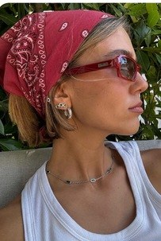
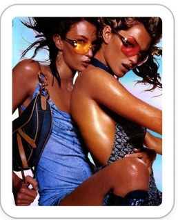
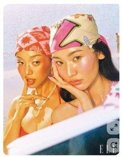
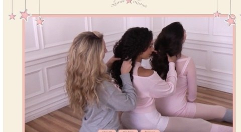

SELECTION · 50
INDIVIDUAL · COVER PORTRAIT · 18
INDIVIDUAL · CLOSE-UP · 5
331290256
23620 INDIVIDUAL · FULL BODY · 17
PAIR / TRIO · COVER · 4

186 184
184
179 301
301PAIR / TRIO · CLOSE-UP · 2
PAIR / TRIO · FULL BODY · 4
 302
302 303
303
309343